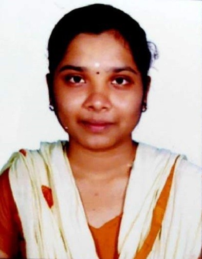

Poornima K

Objective
To build career in an organization, where I can get opportunities to improve and prove
ability by accepting challenges.
Education
- Bachleor of Computer Applications - Queen Mary's College (2020-2023)
- Master of Computer Applications - CEG, Anna University (2023-present)
Work Experience
Skills
- Programming
- C
- C++
- Java
- Python
- HTML,CSS
- Graphic Application: Unity
Certifications
- Scored 79.24% in TCS National Qualifier Test (2022).
- Awarded Certificate of Participation in National Level E-Quiz on ‘CORE
JAVA PROGRAMMING’ conducted by Nehru Memorial College (2022)
scored 95%.
- Python Fundamentals for Beginners – Great Learning Course certificate